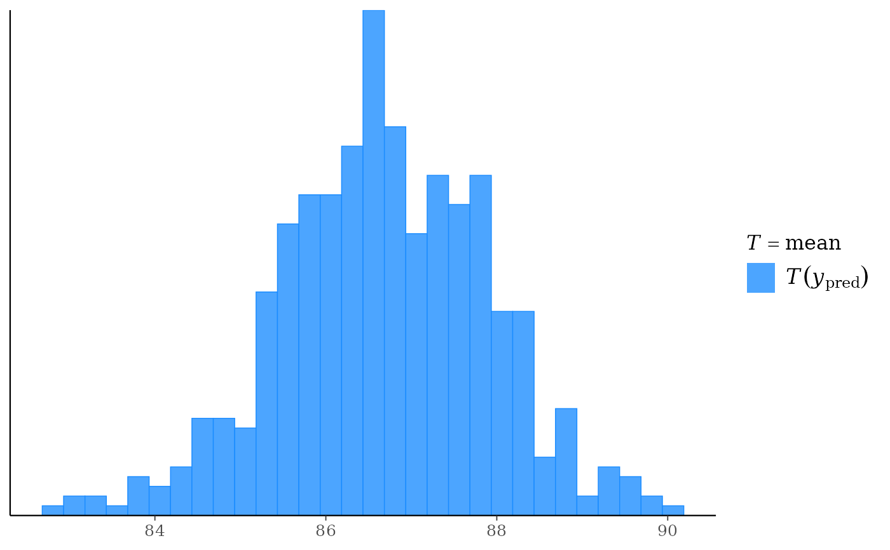
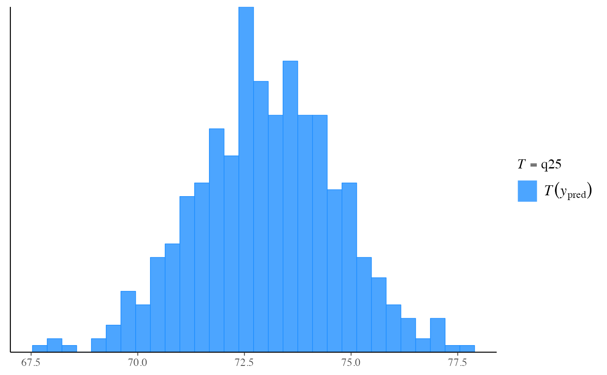

The distribution of a (test) statistic T(ypred), or a pair of (test)
statistics, over the simulations from the posterior or prior predictive
distribution. Each of these functions makes the same plot as the
corresponding ppc_ function but without comparing to
any observed data y. The Plot Descriptions section at
PPC-test-statistics has details on the individual plots.
ppd_stat( ypred, stat = "mean", ..., binwidth = NULL, breaks = NULL, freq = TRUE ) ppd_stat_grouped( ypred, group, stat = "mean", ..., facet_args = list(), binwidth = NULL, breaks = NULL, freq = TRUE ) ppd_stat_freqpoly( ypred, stat = "mean", ..., facet_args = list(), binwidth = NULL, freq = TRUE ) ppd_stat_freqpoly_grouped( ypred, group, stat = "mean", ..., facet_args = list(), binwidth = NULL, freq = TRUE ) ppd_stat_2d(ypred, stat = c("mean", "sd"), ..., size = 2.5, alpha = 0.7) ppd_stat_data(ypred, group = NULL, stat)
Arguments
| ypred | An |
|---|---|
| stat | A single function or a string naming a function, except for the 2D plot which requires a vector of exactly two names or functions. In all cases the function(s) should take a vector input and return a scalar statistic. If specified as a string (or strings) then the legend will display the function name(s). If specified as a function (or functions) then generic naming is used in the legend. |
| ... | Currently unused. |
| binwidth | Passed to |
| breaks | Passed to |
| freq | For histograms, |
| group | A grouping variable of the same length as |
| facet_args | A named list of arguments (other than |
| size | For the 2D plot only, arguments passed to
|
| alpha | For the 2D plot only, arguments passed to
|
Value
The plotting functions return a ggplot object that can be further
customized using the ggplot2 package. The functions with suffix
_data() return the data that would have been drawn by the plotting
function.
Details
For Binomial data, the plots may be more useful if the input contains the "success" proportions (not discrete "success" or "failure" counts).
References
Gabry, J. , Simpson, D. , Vehtari, A. , Betancourt, M. and Gelman, A. (2019), Visualization in Bayesian workflow. J. R. Stat. Soc. A, 182: 389-402. doi:10.1111/rssa.12378. (journal version, arXiv preprint, code on GitHub)
See also
Other PPDs:
PPD-distributions,
PPD-intervals,
PPD-overview
Examples
#>#># use your own function for the 'stat' argument color_scheme_set("brightblue") q25 <- function(y) quantile(y, 0.25) ppd_stat(yrep, stat = "q25") # legend includes function name#>